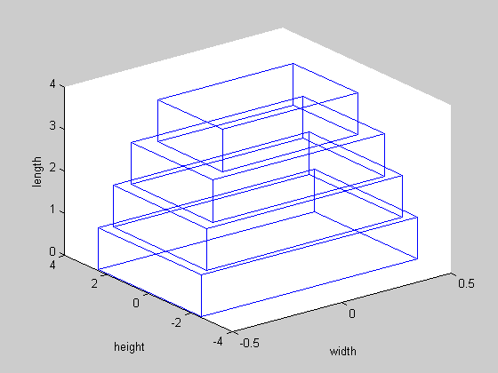

Exercise 4.31: Design of a cantilever beam (non-recursive convex GP formulation)
N = 4;
wmin = .1; wmax = 100;
hmin = .1; hmax = 6;
Smin = 1/5; Smax = 5;
sigma_max = 1;
ymax = 10;
E = 1; F = 1;
cvx_begin
variables wlog(N) hlog(N) vlog(N+1) ylog(N+1) dlog(N)
minimize ( logsumexp_sdp(wlog + hlog) )
subject to
wlog >= log(wmin);
wlog <= log(wmax);
hlog >= log(hmin);
hlog <= log(hmax);
hlog - wlog >= log(Smin);
hlog - wlog <= log(Smax);
log(6*F*[1:N]') - (wlog + 2*hlog) <= log(sigma_max);
log(6*F) - (log(E) + wlog + 3*hlog) == dlog;
for i = 1:N
logsumexp_sdp( [log(2*i-1)+dlog(i) vlog(i+1)] ) <= vlog(i);
logsumexp_sdp( [log(i-1/3)+dlog(i) vlog(i+1) ylog(i+1)] ) <= ylog(i);
end
ylog(1) <= log(ymax);
cvx_end
w = exp(wlog);
h = exp(hlog);
disp('The optimal widths and heights are: ');
w, h
fprintf(1,'The optimal minimum volume of the beam is %3.4f\n', sum(w.*h))
close all;
cantilever_beam_plot([h; w])
Calling SeDuMi: 198 variables (19 free), 113 equality constraints
------------------------------------------------------------------------
SeDuMi 1.1 by AdvOL, 2005 and Jos F. Sturm, 1998, 2001-2003.
Alg = 2: xz-corrector, Adaptive Step-Differentiation, theta = 0.250, beta = 0.500
Split 19 free variables
eqs m = 113, order n = 173, dim = 263, blocks = 16
nnz(A) = 526 + 0, nnz(ADA) = 831, nnz(L) = 500
it : b*y gap delta rate t/tP* t/tD* feas cg cg prec
0 : 7.35E-001 0.000
1 : 7.76E+000 2.47E-001 0.000 0.3367 0.9000 0.9000 3.01 1 1 2.3E+000
2 : 4.93E+000 7.29E-002 0.000 0.2946 0.9000 0.9000 1.96 1 1 4.6E-001
3 : 3.09E+000 2.38E-002 0.000 0.3266 0.9000 0.9000 1.45 1 1 1.3E-001
4 : 2.88E+000 1.47E-002 0.000 0.6178 0.9000 0.9000 1.22 1 1 7.7E-002
5 : 2.72E+000 8.15E-003 0.000 0.5543 0.9000 0.9000 1.16 1 1 4.1E-002
6 : 2.66E+000 1.61E-003 0.000 0.1976 0.9000 0.9000 1.08 1 1 8.3E-003
7 : 2.63E+000 1.73E-005 0.000 0.0108 0.9990 0.9990 1.02 1 1 8.9E-005
8 : 2.63E+000 6.71E-007 0.000 0.0387 0.9900 0.9900 1.00 1 1 3.4E-006
9 : 2.63E+000 2.42E-008 0.000 0.0361 0.9900 0.9900 1.00 1 1 1.3E-007
10 : 2.63E+000 1.77E-009 0.141 0.0729 0.9900 0.9900 1.00 2 2 9.2E-009
iter seconds digits c*x b*y
10 0.5 8.3 2.6316953542e+000 2.6316953399e+000
|Ax-b| = 4.5e-008, [Ay-c]_+ = 1.1E-009, |x|= 2.3e+001, |y|= 1.7e+000
Detailed timing (sec)
Pre IPM Post
3.605E-001 5.408E-001 6.009E-002
Max-norms: ||b||=4.605170e+000, ||c|| = 1.556102e+000,
Cholesky |add|=0, |skip| = 0, ||L.L|| = 3.01605.
------------------------------------------------------------------------
Status (cvx_status): Solved
Optimal value (cvx_optval): 2.6317
The optimal widths and heights are:
w =
0.6214
0.7830
0.8963
0.9865
h =
3.1072
3.9149
4.4814
4.9324
The optimal minimum volume of the beam is 13.8786
